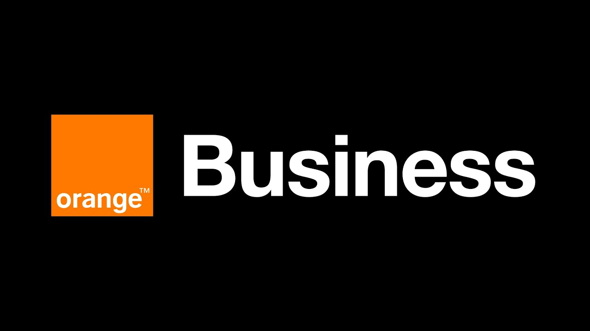
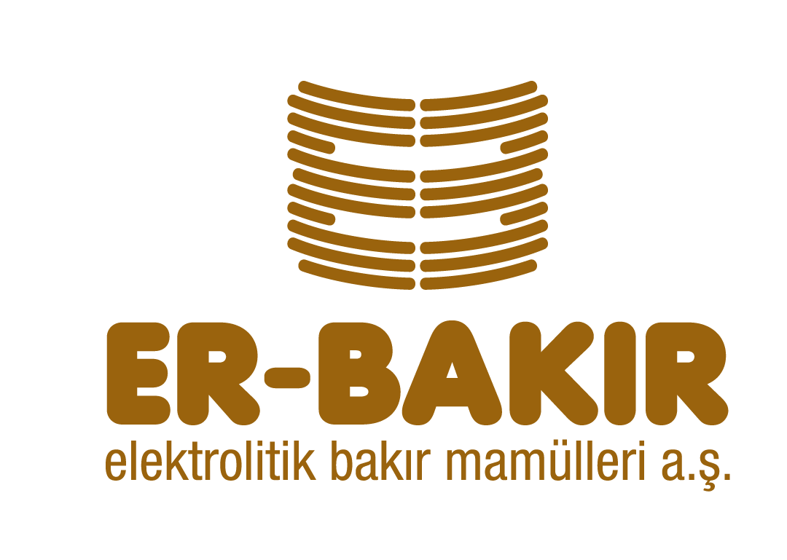

Experience Details
 Data Management Platform Admin / Framework Lead
Data Management Platform Admin / Framework Lead
Accenture Baltics
Sep 2024 – Present
Riga, Latvia
- Led the design and implementation of the Databricks Data Platform, ensuring seamless integration with data models and tools.
- Developed automation solutions and managed data ingestion, transformation, and governance using Databricks, AWS, Python, Bitbucket, and Jenkins for CI/CD.
- Utilized Jira and Confluence for project planning and documentation, ensuring data security and timely project delivery.
Senior Presales Solutions Partner
Orange Business
Nov 2023 – Aug 2024
Istanbul, Turkey
- Crafting innovative and strategic solutions in connectivity, cloud, and security domains to drive client success and enhance organizational growth.
- Working closely with different teams to create solutions that match clients' unique needs, ensuring a client-focused approach.
- Offering expert guidance and support during the presales phase, helping create clear proposals and presentations that show the value of our solutions.
 GreenLake Solution Architect
GreenLake Solution Architect
HPE
Jan 2022 – Oct 2023
Istanbul, Turkey
HPE GreenLake brings the cloud experience in a pay-per-use model at the edge, in colocations, & in data centers.
- Developing Well-Architected custom solutions, focusing on HPE GreenLake “As A Service” model (IaaS & PaaS), Managed Services, Advisory and Professional Services, and other solutions, building consumption offerings
- Identifying key risks of the solution and propose mitigation plans
- Pricing the designed solution, and building price to achieve profitable and winning solutions
- Creating business case to show the value of the GreenLake solution proposed to the customer
- Developing and delivering sales and technical presentations for different partner and customer stakeholders for medium to large opportunities
- Conduct negotiations for and with sales representatives during the sales cycle
- Lead and write quality and winning responses to RFQ/RFQ/RFI requests
- Lead teams and collaborate closely with business leaders, sales, consultants, and architects, both internal and external to HPE
Senior Solution Manager
KoçSistem Information and Communication Services Inc.
Jul 2017 – Dec 2021
Istanbul, Turkey
The main services in the scope of responsibility are;
Data Center Services
- Co-Location (Dedicated and Shared)
- Smart Hand Services
- Private, Public and Hybrid Cloud Services (Microsoft Azure, AWS)
- Maximus Cloud Service (IaaS)
- HANA As A Service (HaaS)
- Maximus Exadata and Exalogic Service
- Back Up As A Service (BaaS)
- Disaster As A Service (DRaaS)
- Red Hat OpenShift Container Platform Service (PaaS)
- Azure Managed Services
- Virtualization (VMWare, Hyper-V, Citrix)
- O/S (MS Windows, Linux, Unix)
- SAP BASIS
- DB (MS SQL, Oracle, DB2, MySQL, Cassandra, Redis, PostgreSQL, MariaDB, MongoDB, etc.)
- Middleware (Weblogic, Websphere, Apache, PHP, etc.)
- Analytic (Apache Spark, Elastic Search, Kibana, Zeppelin, RabbitMQ, etc.)
- Microsoft Services (Domain Controller / Active Directory, IIS Web Server, File and Print Server, Exchange Mail Server, Mail Archiving Server, Skype Server)
- Monitoring of LAN & WAN Switches, Routers, WLC, AP
- Managed Network and Voice Services
- SIEM and SOC Services
- Shared and Dedicated Security Solutions
- Managed Security Services
- Being a Trusted Adviser for My Customers.
- Overall responsibility of designing the best solution and preparing customer-specific proposals for Managed Services and Full IT Outsourcing Projects.
- Understanding Customer Business Needs, creating best matching solutions for these needs, presenting the suggested solution to both technical and management teams, preparing proposals for the approved solution design, overseeing delivery of the solution and managing the project lifecycle.
- Working closely with Account Managers and Executive Management to develop Winning Strategy for the proposals.
- Performing price and solution negotiations with Vendors and Business Partners.
- Expert knowledge on pricing and ability to lead discussions with Pricing and Finance Teams.
- Managing Contract Renewal process for existing customers.
- Helping Product Management teams to create new solutions by preparing sector analysis
- Educating Customers and Internal Teams on the value propositions and technical details of KoçSistem Solutions on both training and countrywide events.
 Infrastructure Services Sales Specialist
Infrastructure Services Sales Specialist
IBM
May 2015 – Jun 2017
Istanbul, Turkey
Executing sales of the following IT Services in the scope of the Full IT outsourcing projects:
- Co-Location Services
- Cloud Solutions (IaaS and PaaS)
- Managed Services for Operating System, Database, Middleware and Applications
- SAP BASIS Managed Services
- Network and Security Managed Services
- e-Invoice
- e-Ledger
- e-Archive
- e-Ticket
- Retail Sector
- Public Sector
- Geo Sector (Non-Istanbul Companies)
Data Center Solutions and Services Sales Specialist
KoçSistem Information and Communication Services Inc.
Jul 2009 – Apr 2015
Istanbul, Turkey
- Following and controlling all the sales cycle beginning from pre-sales activities till after sales and contract processes
- Producing customer-specific proposals and attending customer meetings and presentations
- Responsible for identifying customer needs and developing innovative solutions to satisfy their requirements
- Building and maintaining customer satisfaction through the development of broad customer relationships
- Making Cross-Selling and Up-Selling plans for the customers regarding their needs
- Developing target/potential customer lists and making them aware of Cloud and IT Outsourcing Services
- Managing relationships and negotiations with various IT Vendors
Part Time Intern at Various Projects
Peppers & Rogers Group
Jan 2009 – Jun 2009
Istanbul, Turkey
- Worked on the Modeling and Sizing Project for Bank Teller Staff
- Assisted calculation of the necessary optimum staff to achieve the desired service levels in bank branches
- Worked on the Customer Data Quality Project
Intern at Logistics Department
Mercedes Benz Türk A.Ş.
Jul 2008 – Aug 2008
Istanbul, Turkey
- Working on Supplier Order Generation Methods and Order Placement Methods
- Assistance by Inventory Reduction Activities (ABC and Inventory Reach Analysis)
- Analyzing Kaizen Applications of Mercedes-Benz Turk
- Getting used to SAP’s Logistics Control Module
- Learning essential information about Consolidated Shipments and FTL (Full Truckload) Shipments
Intern at Production Planning Department
Er-Bakır Elektrolit A.Ş.
Jun 2007 – Aug 2007
Denizli, Turkey
- Analyzing ER-BAKIR’s Production System and Production Processes
- Preparation of Production Planning Schedules and Plans
- Working on Market Research and Demand Forecasting